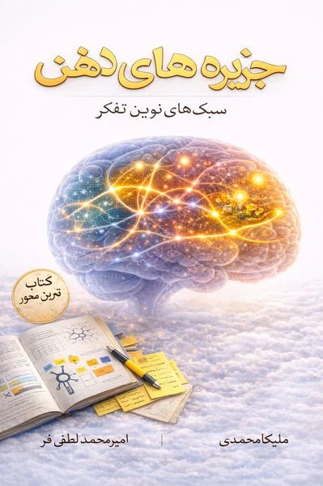

What the book is
A practice-oriented educational framework for observing, choosing, and combining different ways of thinking. The nine-island model is an authored, practical map — not a final classification and not a personality test.

جزیرههای ذهن تو — ۹ لنز فکری برای تصمیمهای بهتر، رابطههای سالمتر و زندگی آگاهانهتر
Nine thinking lenses for better decisions, healthier relationships, and a more conscious life
Ready for publication and print
A practice-oriented educational framework for observing, choosing, and combining different ways of thinking. The nine-island model is an authored, practical map — not a final classification and not a personality test.
The exercises are not a tool for diagnosing psychological disorders and do not replace psychotherapy or medical, legal, or financial advice. In high-risk or crisis situations, professional help is essential.
No background in psychology or neuroscience is needed — only the willingness to look at your real experience without turning observation into self-trial.
A good exercise here has three features: a tangible output, limited time, and an effect you can check later. If starting is hard, do the "starter version": two minutes and one real example.
How the book is built, from the first page to the last.
Why do we keep doing the same thing even though we know better? Thinking more is not always thinking better — what matters is which lens you use, and when you switch.
For 24 hours you may not improve yourself; you only catch your mind mid-decision three times. Three missions: hunt three moments, "what did the camera see, what did the narrator say?", and find the frame where the path changed. Output: three fingerprints of your mind.
The gap between impulse and choice. Fast vs. reflective processing; three abilities that slip when you are tired — working memory, inhibitory control, cognitive flexibility; five moves for leaving automatic mode.
One lens per chapter, each with a real case file, a main tool, a step-by-step cycle, common traps, and two quick scenes.
Nine islands, not nine personality types. A quick-choice map from problem signal to island, a pocket version in five moves, four small appointments with your own mind, and the last scene: tomorrow morning.
A quick guide to thinking traps and biases, a quick glossary, an integrated reference list, and a closing note: a good mind is a correctable mind.
Choose an island to see its case file, main tool, and the questions it teaches you to ask.
Analytical thinking: turning ambiguity into a problem, a hypothesis, and a measurable action
“Do not fall in love with the first explanation”
Creative thinking: widening options and building new, useful, testable solutions
“Generating and choosing should not happen at once”
Critical thinking: weighing claims, evidence, and degree of confidence
“Good doubt is not bad thinking”
Empathic thinking: understanding another person's experience without dropping reality, responsibility, or boundaries
“Understanding is not agreeing”
Systems thinking: seeing the patterns, loops, and structures that reproduce a problem
“See the structure, not just the event”
Strategic thinking: choosing a path, building focus, and learning under uncertainty
“Choosing means giving something up”
Experimental and scientific thinking: turning guesses into tests, measurement, and reliable learning
“From "I think" to "show me"”
Integrative thinking: choosing, sequencing, and coordinating lenses for complex problems
“Combine only as much as the problem needs”
Reflective thinking: monitoring your thinking, calibration, and learning from experience
“A good outcome is not a good decision”
All nine island chapters follow the same rhythm.
What you carry from the previous island, and a real case file that needs this lens.
What this kind of thinking is — and what it is not.
A step-by-step cycle, worked out on the case file.
Two or three practical tools, with when to use and when not to.
The common ways this lens goes wrong.
Short everyday situations to try the method on.
Two missions; you only need to do one.
Three reminders to take with you.
From the introduction — original Persian text, with an English translation below.
ساعت ۰۰:۱۲ است. فردا ساعت ۹ باید ارائه بدهی و نیمی از اسلایدها هنوز آماده نیستند. گوشی را فقط برای «پنج دقیقه» برمیداری. یک ویدئو، بعد یکی دیگر. وقتی دوباره به ساعت نگاه میکنی، ۰۰:۵۲ است. در چهل دقیقه، نه استراحت کردهای و نه جلو افتادهای؛ فقط اضطراب بیشتری خریدهای. ذهن هم بیدرنگ حکم میدهد: «باز خرابش کردم.»
مسئله کمبود فکر نیست. ممکن است زیاد هم فکر کنی و باز در همان الگو بیفتی. سؤال این کتاب سادهتر و سختتر است: «در این لحظه، ذهن من از کدام مسیر رفت—و چه لنزی میتوانست چیزی را نشان بدهد که ندیدم؟»
ذهن را مثل مجمعالجزایری تصور کن که هر جزیره یک سؤال را بهتر میبیند. تحلیلگر میپرسد «شاهد چیست؟»؛ همدل میپرسد «این تصمیم برای آدمها چه معنایی دارد؟»؛ استراتژیست میپرسد «اگر امروز این را انتخاب کنم، فردا چه گزینههایی باز یا بسته میشوند؟» نقشه، خودِ واقعیت نیست؛ فقط یادآوری میکند چه وقت باید منظره را عوض کنی.
It is 00:12. Tomorrow at 9 you have to present, and half the slides are not ready. You pick up your phone for just “five minutes”. One video, then another. When you look at the clock again, it is 00:52. In forty minutes you have neither rested nor moved forward; you have only bought more anxiety. And the mind immediately rules: “I ruined it again.”
The problem is not a shortage of thinking. You may think a lot and still fall into the same pattern. The question of this book is simpler and harder: “At this moment, which path did my mind take — and which lens could have shown me something I did not see?”
Imagine the mind as an archipelago in which each island sees one question better. The analyst asks “What is the evidence?”; the empath asks “What does this decision mean for people?”; the strategist asks “If I choose this today, which options open or close tomorrow?” The map is not reality itself; it only reminds you when to change the view.
From "The end of the journey" — original Persian with translation.
اگر چیزی از این سفر با تو بماند، لازم نیست نام ۹ جزیره باشد. کافی است در لحظههای مهم بتوانی مکث کنی، سؤال بهتری بسازی، دیگری را ببینی، با واقعیت تماس بگیری و وقتی لازم شد مسیرت را عوض کنی.
ذهن خوب ذهنی نیست که همیشه جواب درست دارد؛ ذهنی است که بلد است خودش را اصلاح کند.
کتاب را ببند. اولین آزمون، همان تصمیمی است که بیرون از این صفحه منتظر توست.
If anything from this journey stays with you, it does not have to be the names of the nine islands. It is enough that in important moments you can pause, build a better question, see the other person, touch reality, and change your path when needed.
A good mind is not one that always has the right answer; it is one that knows how to correct itself.
Close the book. The first test is the decision waiting for you outside this page.
Selected illustrations and infographics from the manuscript. Click an image to enlarge.
The examples without a source are composite teaching scenarios, and the numbers in them are not real research or company data unless a source is given.
Scientific references appear where the text needs to separate an educational metaphor from a research result from practical advice; a citation to one study is not a general law or a certain causal relation.
Page numbers of the print layout (A5).